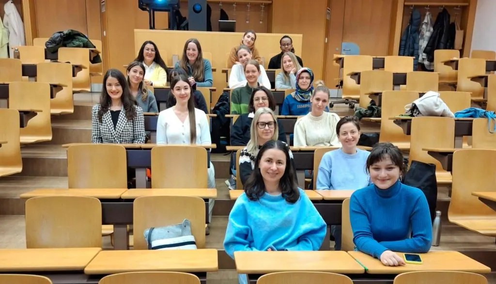

“Ich werde nicht aufhören, bis ich alle meine Ziele erreicht habe”
“I will not stop until I achieve all my goals”
“Ich werde nicht aufhören, bis ich alle meine Ziele erreicht habe”
SEETs Studienunterstützungsprogramm endet mit einem feierlichen Workshop
“Unsere Zeit im Programm ist zu Ende, aber ich weiss, dass wir unsere Beziehung in der Zukunft fortsetzen werden, und wir werden etwas Kreatives und Bereicherndes zusammen machen.”
Diese Worte waren nur eine von vielen persönlichen Überlegungen, als die 35 Teilnehmer des SEET-Studienunterstützungsprogramms Ende letzter Woche gebeten wurden, ihre neunmonatige Mentor-Mentee-Beziehung Revue passieren zu lassen.
Charlotte Eder von SEET führte mehr als zwanzig Personen im Saal der ETH Zürich und weitere fünfzehn, die online teilnahmen, geschickt durch ein 90-minütiges Treffen. Die Veranstaltung war nicht nur eine Feier, sondern auch eine wichtige Gelegenheit für das SEET-Team, ein qualitatives Feedback über die Wirksamkeit des Programms einzuholen.
Vor Mai 2024 hatten sich die Mentoren und Mentees – letztere sind in der Schweiz lebende Geflüchtete, die ein Studium aufnehmen oder wieder aufnehmen wollen – noch nie getroffen. Die positive Stimmung, die im Auditorium und über den Zoom-Chat zum Ausdruck kam, war ein wahrer Beweis für die Fähigkeit der Menschen, dauerhafte Beziehungen zu knüpfen.
Um die Kreativität der Teilnehmenden herauszufordern, wurde jedem Mentor-Mentee-Team ein leeres Blatt Papier und ein Stift ausgehändigt, und jedes Paar hatte die Möglichkeit, seine Worte mit einer bildlichen Bewertung seiner Zeit im Programm zu kombinieren. Insbesondere wurden sie gebeten, ihre ursprünglich gemeinsam definierten Ziele zu überprüfen und sie mit ihrer aktuellen Situation zu vergleichen.
Eine Reihe von Mentees schilderte, wie sie mit der Unterstützung und Anleitung ihres Mentors und der finanziellen Förderung durch SEET in den letzten neun Monaten einen B2- oder C1-Abschluss in Deutsch erreicht haben. Dies ist ein wichtiger Schritt zur weiteren sozialen Integration und zum beruflichen Fortkommen.
Einige Mentees haben ein Betriebspraktikum begonnen. Zwei haben entweder ein Studium der Sozialen Arbeit begonnen oder werden es im September 2025 aufnehmen. Andere berichten, dass sie so unterschiedliche Fächer wie Wirtschaftsprüfung, Wirtschaft und Recht sowie Logistik studieren, während ein weiterer Student im September 2025 ein Masterstudium beginnen wird.
Eine Studentin schliesslich erläuterte, wie sie die Anforderungen eines Bachelorstudiums in Gesundheitsförderung und Prävention an der Zürcher Hochschule für Angewandte Wissenschaften (ZHAW) in Winterthur, das sie vor dem Eintritt in das SEET-Programm begonnen hatte, mit einem Teilzeitjob in der Betreuung von Kindern im Vorschulalter in Einklang bringt.
Neben den greifbaren akademischen Erfolgen der Gruppe berichteten die Mentees auch, dass die Partnerschaft mit ihrem Mentor und Buddy eine Vielzahl von weniger sichtbaren, aber nicht weniger wichtigen Spuren hinterlassen wird.
Sicherheit, Glaube, Motivation, Wärme, Spass und Unterstützung waren die Worte, mit denen einige der Flüchtlinge die positiven Auswirkungen des Programms beschrieben.
Eine Mentee beschloss, dass sie keine Bilder malen müsse, da ihre Worte in dunkelgrünem Stift mehr als genug waren, um ihre Erfahrungen und die Zukunft zu beschreiben.
“Meine Mentorin hat alle meine Erwartungen erfüllt, und obwohl ich noch nicht alle meine Ziele erreicht habe, werde ich auf keinen Fall aufhören, bis ich sie alle erreicht habe”, schrieb sie.
Alle Teilnehmer des Programms 2024/25 erhalten eine Teilnahmebescheinigung. In den nächsten Wochen werden die Mentees, die ihr Studium fortsetzen und eine Verlängerung beantragt haben, erfahren, ob ihre Reise mit SEET um weitere zwölf Monate verlängert wird.
Für andere, wie zwei Schwestern aus der Ukraine, werden die bevorstehenden Deutschprüfungen sie hoffentlich ihrem Traum einen Schritt näherbringen: dem Beginn einer Karriere in einem Land, das ihre neue Heimat geworden ist.
Dem SEET-Team, das während der Veranstaltung vor Ort war oder online unterstützte, gilt wie immer unser herzlicher Dank für seinen unschätzbaren ehrenamtlichen Beitrag.
Wir sind den Mentoren und Mentorinnen, die in den letzten neun Monaten ihre persönliche Zeit geopfert haben, sehr dankbar für ihr Vertrauen in unser Programm. Wir hoffen, dass Sie in einem ruhigeren Moment in der Lage sein werden, über den unermesslichen Einfluss nachzudenken, den Sie auf das Leben und die Zukunft ihres jeweiligen Mentees, ihrer jeweiligen Mentee hatten.
Zum Schluss noch ein Wort an die Mentees. Das SEET-Team ist der festen Überzeugung, dass jeder Mensch das unantastbare Recht auf Bildung hat. Unser Ziel ist es, eine Brücke zu bauen – von den Herausforderungen, mit denen viele von ihnen in einem neuen Land konfrontiert werden, hin zur Entfaltung ihres vollen Potenzials, das zweifellos eine Bereicherung für die Schweizer Gesellschaft darstellt.
Einer der berühmtesten Philosophen der Geschichte sagte: „Unser grösster Ruhm besteht nicht darin, nie zu fallen, sondern jedes Mal aufzustehen, wenn wir fallen.“
Wenn man die Teilnehmerinnen und Teilnehmer nach der Veranstaltung an der ETH Zürich nach Hause gehen sieht, ist klar, dass ihr Weg auch in Zukunft von Herausforderungen geprägt sein wird. Doch eines steht für uns fest: Wenn jemand stolpert, wird er seinen Mentor finden, der ihn auffängt.
SEET’s Study Support mentoring programme concludes with celebratory workshop

“Our time in the programme has come to an end but I know we will continue with our relationship in the future, and we will do something creative and enriching together.”
These words were just one of numerous personal reflections as 35 participants of SEET’s study support programme were asked to summarise their nine-month long mentor-mentee relationships on Thursday 20 February.
SEET’s Charlotte Eder deftly guided more than twenty people in the room at the ETH in Zürich, with another fifteen joining online for a 90-minute meeting. The event was not only a celebration, but also an important opportunity for the SEET team to gather some qualitative feedback on the efficacy of the programme.
Prior to May 2024, the mentors and mentees – the latter group, refugees living in Switzerland who were seeking to start or re-start their academic studies – had never met before. Yet the positivity expressed in the auditorium and via the Zoom chat was a true testament to the ability of humans to forge long-lasting relationships.
To challenge the creativity of those at the ETH, each mentor-mentee partnership was handed a blank sheet of paper and a coloured pen. The task was to review the original co-defined goals they set, and to compare them with their current respective situation. Combining words, with a pictorial evaluation of their time together.
Several mentees outlined how, with the support and guidance of their mentor, and financial contributions from SEET during the last nine months, they had achieved a B2 or C1 German language qualification: a key step towards further social integration and career advancement.
Some have commenced industrial work placements. Two mentees have either begun or will soon commence studies in social work. Others detailed how they are currently studying topics as diverse as Auditing, Economics and Law, and Logistics, whilst another student will begin a Masters in September 2025.
Finally, one female member of the cohort explained how she was balancing the requirements of a bachelor’s degree in health promotion and prevention at the Zurich University of Applied Sciences (ZHAW) in Winterthur – that she had commenced prior to joining the SEET programme – with a part-time job working with pre-Kindergarten aged children.
As well as the tangible academic achievements across the group, the mentees also shared how the partnership with their mentor and buddy will also leave a multitude of less visible, but no less important legacies.
Security, belief, motivation, warmth, fun and support were all words used by some of the refugees to detail the positive impact of the programme.
One mentee decided that she didn’t need to draw any pictures, as her words in dark green pen were more than enough to succinctly conclude her experience, and what the future holds.
“My Mentor fulfilled all my expectations, and although I have not reached all my goals yet, I will absolutely not stop until I do achieve them all” she wrote.
All participants of the 2024/25 programme will receive a certificate of participation in May. The mentees who will continue their studies and have applied for an extension, will shortly learn if their SEET journey will continue for a further twelve months. Meanwhile, for others, like two sisters from Ukraine, forthcoming German exams will hopefully take them one step further to their dream: the start of a career in a country that became their new home.
To the SEET team who were on-site or supported online during the event, we are truly grateful as always for your invaluable voluntary contributions.
To the mentors who gave up their personal time over the last nine months, we extend our heartfelt thanks for your belief in our programme. We hope that in a quieter moment, you will be able to reflect on the immeasurable impact you each had on the lives and futures of your respective mentee.
Finally, to the mentees. The SEET team passionately believe that everyone has the inviolable right to education. Our aim is to provide a bridge between the obstacles many of you first encounter in a new country, and the realisation of your future potential, which will undoubtedly enrich Swiss society.
One of history’s most famous philosophers said: “Our greatest glory is not in never falling, but in rising every time we fall.”
As those at the ETH in Zürich departed for their homes post-event, there will inevitably be times in future when their path ahead presents another hurdle. We are certain of one thing though. That if someone trips, they will find their mentor ready to pick them back up again.
Cet article n’est disponible qu’en allemand.
SEETs Studienunterstützungsprogramm endet mit einem feierlichen Workshop
“Unsere Zeit im Programm ist zu Ende, aber ich weiss, dass wir unsere Beziehung in der Zukunft fortsetzen werden, und wir werden etwas Kreatives und Bereicherndes zusammen machen.”
Diese Worte waren nur eine von vielen persönlichen Überlegungen, als die 35 Teilnehmer des SEET-Studienunterstützungsprogramms Ende letzter Woche gebeten wurden, ihre neunmonatige Mentor-Mentee-Beziehung Revue passieren zu lassen.
Charlotte Eder von SEET führte mehr als zwanzig Personen im Saal der ETH Zürich und weitere fünfzehn, die online teilnahmen, geschickt durch ein 90-minütiges Treffen. Die Veranstaltung war nicht nur eine Feier, sondern auch eine wichtige Gelegenheit für das SEET-Team, ein qualitatives Feedback über die Wirksamkeit des Programms einzuholen.
Vor Mai 2024 hatten sich die Mentoren und Mentees – letztere sind in der Schweiz lebende Geflüchtete, die ein Studium aufnehmen oder wieder aufnehmen wollen – noch nie getroffen. Die positive Stimmung, die im Auditorium und über den Zoom-Chat zum Ausdruck kam, war ein wahrer Beweis für die Fähigkeit der Menschen, dauerhafte Beziehungen zu knüpfen.
Um die Kreativität der Teilnehmenden herauszufordern, wurde jedem Mentor-Mentee-Team ein leeres Blatt Papier und ein Stift ausgehändigt, und jedes Paar hatte die Möglichkeit, seine Worte mit einer bildlichen Bewertung seiner Zeit im Programm zu kombinieren. Insbesondere wurden sie gebeten, ihre ursprünglich gemeinsam definierten Ziele zu überprüfen und sie mit ihrer aktuellen Situation zu vergleichen.
Eine Reihe von Mentees schilderte, wie sie mit der Unterstützung und Anleitung ihres Mentors und der finanziellen Förderung durch SEET in den letzten neun Monaten einen B2- oder C1-Abschluss in Deutsch erreicht haben. Dies ist ein wichtiger Schritt zur weiteren sozialen Integration und zum beruflichen Fortkommen.
Einige Mentees haben ein Betriebspraktikum begonnen. Zwei haben entweder ein Studium der Sozialen Arbeit begonnen oder werden es im September 2025 aufnehmen. Andere berichten, dass sie so unterschiedliche Fächer wie Wirtschaftsprüfung, Wirtschaft und Recht sowie Logistik studieren, während ein weiterer Student im September 2025 ein Masterstudium beginnen wird.
Eine Studentin schliesslich erläuterte, wie sie die Anforderungen eines Bachelorstudiums in Gesundheitsförderung und Prävention an der Zürcher Hochschule für Angewandte Wissenschaften (ZHAW) in Winterthur, das sie vor dem Eintritt in das SEET-Programm begonnen hatte, mit einem Teilzeitjob in der Betreuung von Kindern im Vorschulalter in Einklang bringt.
Neben den greifbaren akademischen Erfolgen der Gruppe berichteten die Mentees auch, dass die Partnerschaft mit ihrem Mentor und Buddy eine Vielzahl von weniger sichtbaren, aber nicht weniger wichtigen Spuren hinterlassen wird.
Sicherheit, Glaube, Motivation, Wärme, Spass und Unterstützung waren die Worte, mit denen einige der Flüchtlinge die positiven Auswirkungen des Programms beschrieben.
Eine Mentee beschloss, dass sie keine Bilder malen müsse, da ihre Worte in dunkelgrünem Stift mehr als genug waren, um ihre Erfahrungen und die Zukunft zu beschreiben.
“Meine Mentorin hat alle meine Erwartungen erfüllt, und obwohl ich noch nicht alle meine Ziele erreicht habe, werde ich auf keinen Fall aufhören, bis ich sie alle erreicht habe”, schrieb sie.
Alle Teilnehmer des Programms 2024/25 erhalten eine Teilnahmebescheinigung. In den nächsten Wochen werden die Mentees, die ihr Studium fortsetzen und eine Verlängerung beantragt haben, erfahren, ob ihre Reise mit SEET um weitere zwölf Monate verlängert wird.
Für andere, wie zwei Schwestern aus der Ukraine, werden die bevorstehenden Deutschprüfungen sie hoffentlich ihrem Traum einen Schritt näherbringen: dem Beginn einer Karriere in einem Land, das ihre neue Heimat geworden ist.
Dem SEET-Team, das während der Veranstaltung vor Ort war oder online unterstützte, gilt wie immer unser herzlicher Dank für seinen unschätzbaren ehrenamtlichen Beitrag.
Wir sind den Mentoren und Mentorinnen, die in den letzten neun Monaten ihre persönliche Zeit geopfert haben, sehr dankbar für ihr Vertrauen in unser Programm. Wir hoffen, dass Sie in einem ruhigeren Moment in der Lage sein werden, über den unermesslichen Einfluss nachzudenken, den Sie auf das Leben und die Zukunft ihres jeweiligen Mentees, ihrer jeweiligen Mentee hatten.
Zum Schluss noch ein Wort an die Mentees. Das SEET-Team ist der festen Überzeugung, dass jeder Mensch das unantastbare Recht auf Bildung hat. Unser Ziel ist es, eine Brücke zu bauen – von den Herausforderungen, mit denen viele von ihnen in einem neuen Land konfrontiert werden, hin zur Entfaltung ihres vollen Potenzials, das zweifellos eine Bereicherung für die Schweizer Gesellschaft darstellt.
Einer der berühmtesten Philosophen der Geschichte sagte: „Unser grösster Ruhm besteht nicht darin, nie zu fallen, sondern jedes Mal aufzustehen, wenn wir fallen.“
Wenn man die Teilnehmerinnen und Teilnehmer nach der Veranstaltung an der ETH Zürich nach Hause gehen sieht, ist klar, dass ihr Weg auch in Zukunft von Herausforderungen geprägt sein wird. Doch eines steht für uns fest: Wenn jemand stolpert, wird er seinen Mentor finden, der ihn auffängt.